|
|
Establishing artifact types
Note: If you are not already familiar with artifacts you should first check out the User Guide topics Introduction to assets and Glossary artifacts
It is the responsibility of the system administrator to define and maintain a set of artifact types to enable Data Steward and Business Owner users to create, develop and maintain artifacts - building out an accurate, high quality glossary of commonly understood and agreed upon terms.
When a user creates a new glossary artifact, they must first choose an artifact type. The artifact type determines the following:
- The category of the artifact e.g. Business Term, Application, Process.
- The fields which the user must fill in for the artifact.
- The relationships that can be created.
- The responsibilities assigned by default to the artifact.
- The workflows that are initiated upon certain actions (e.g. creation, modification).
Tip: It is useful to think of artifact types as categories of Glossary terms. For example, you may have a top-level artifact type for Vendors, but then wish to further organize vendors into Software, License Services and Professional Services.
Browsing artifact types
Choose Administration > MetaModel > Artifact to view a list of existing Artifact Types, with details for the selected item shown on the right:
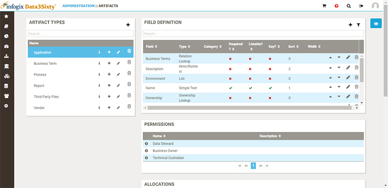
You can filter the list of Artifact Types by typing the first few characters of an existing artifact type in the Artifact Types Search bar:
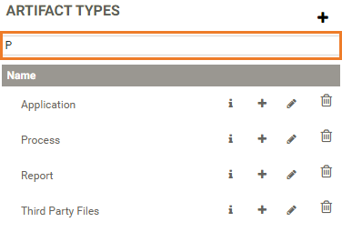
Creating artifact types
Click the Add button to create a new Artifact Type:
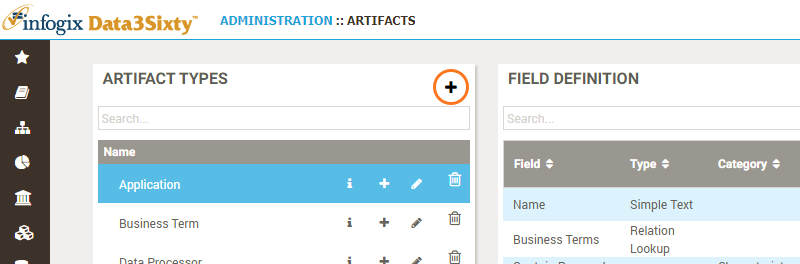
The Add Artifact Type panel appears:
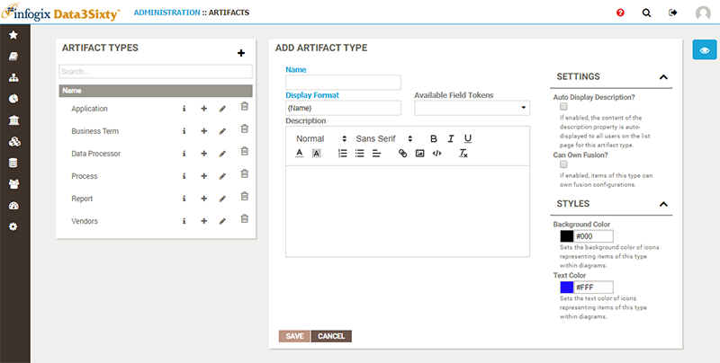
Enter a name for the artifact type in the Name field, and optionally enter a Description. The value that you enter in the Name field is the value that users will see when they click the Glossary button on the left side of the screen. "Business Term" is an example of an artifact type name.
By default, when you create a new artifact type, it will have a field called Name, and this is the value that is displayed in the breadcrumb when a user opens the artifact details page:
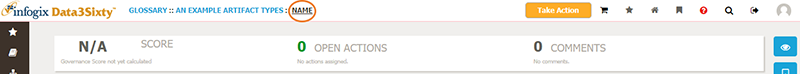
From the Administration > Artifacts page, you can edit the default name of the field by selecting the artifact type, then clicking the Edit button in the Field Definition panel:
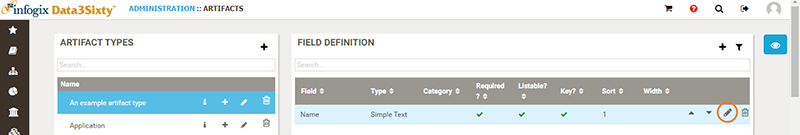
Note: If you edit the field name, this is not automatically picked up throughout the system. You must also apply the change in the Edit Artifact Type panel as follows.
Click the Edit button to the right of the selected artifact type, then in the Edit Artifact Type panel, select the new field name token from the Available Field Tokens list:
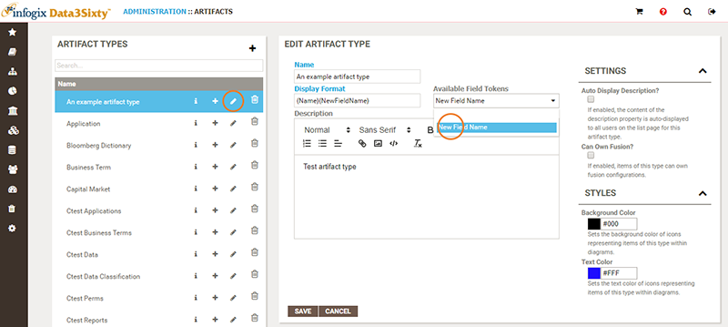
Finally, delete the existing token from the Display Format field to leave only the new token:
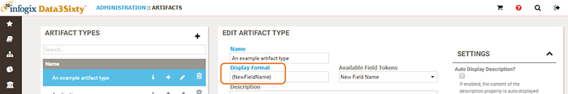
This ensures that the field name is updated elsewhere in the application, for example the value that is displayed in the breadcrumb when a user opens the artifact type.
Along with name and description, the following Settings are available:
- Auto Display Description - If enabled, the content of the description property is auto-displayed to all users on the list page for this artifact type.
- Can Own Fusion? - Controls the Fusion configuration which applies during auto promotion.
- Background Color - This is the color of the box used in lineage diagrams.
- Text Color - This is the color of the text used in lineage diagrams.
Creating child artifact types
To help you categorize your artifact types, you can also create a new artifact type as a child of an existing item.
- Click the Add button next to the existing artifact type:
- In the Add Artifact Type panel, enter a name for the child artifact type and select a predicate from the Predicate To Parent list. For example:
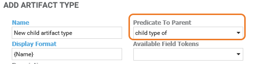
Note: It is important to select a predicate. If you do not select a predicate, your new artifact type will be created as a top level (parent) artifact type rather than as a child of the selected artifact type.
Editing artifact types
You can edit and delete artifact types by clicking the edit or delete button to the right of the selected artifact in the Artifact Types list. Choosing edit will display the Edit Artifact Type panel for the chosen item:
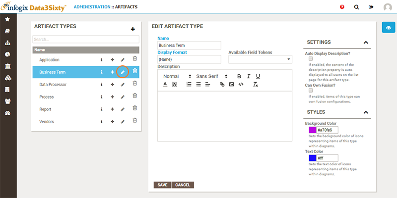
If you choose to delete an artifact type, you will be prompted to confirm the deletion of the artifact type, along with any artifacts which are based on this type:
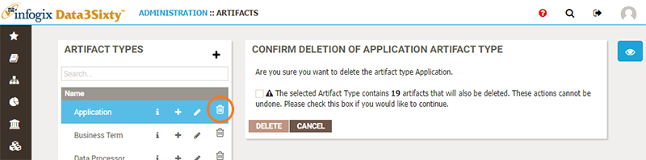
Caution: This operation cannot be undone, so great care should be taken when deleting artifacts and artifact types.
Field definition
For the selected artifact type, the Field Definition table on the right is available to determine which fields should be displayed and populated as part of the definition of an artifact of this type:
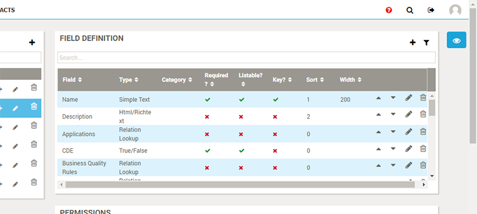
Please see Defining fields on asset types for full details on editing the fields associated with an asset.
Responsibility type assignment
You can manage permissions on asset types via Responsibility Types. Please see Establishing responsibilities for more details.
Relationship types
If you are not already familiar with the configuration of relationship types, please see Establishing relationships
From this section you can view the relationship types associated with the selected artifact type, as well as create new relationship types:
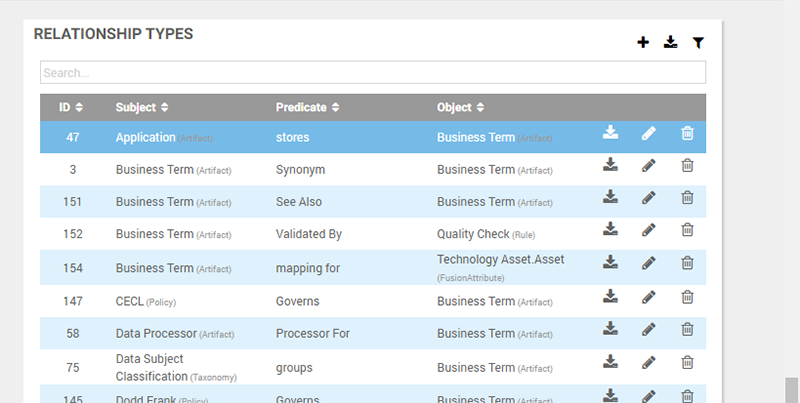